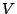

Computing the derivative of an expression with respect to some variable is a classical problem. Computing the derivative of X * (X + Y + Z) with respect to X gives:
d(X * (X + Y + Z)) / dX = X + Y + Z + X
Differentiation is defined in several stages in the specification below[in Figure ]CODE:diff. First, the sorts Nat (natural numbers), Var (variables), and Exp (expressions) are introduced. Next, a differentiation operator of the form d / d  is defined. Then, the differentiation rules are defined (equations [1]-[5]). Finally, some rules for simplifying expressions are given. As the above example shows, further simplification rules could have been added to collect multiple occurrences of a variable (giving 2*X + Y + Z) or to compute constant expressions.